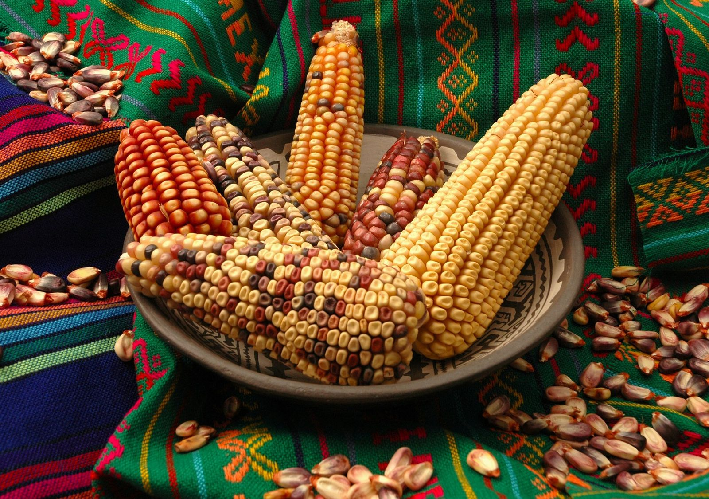
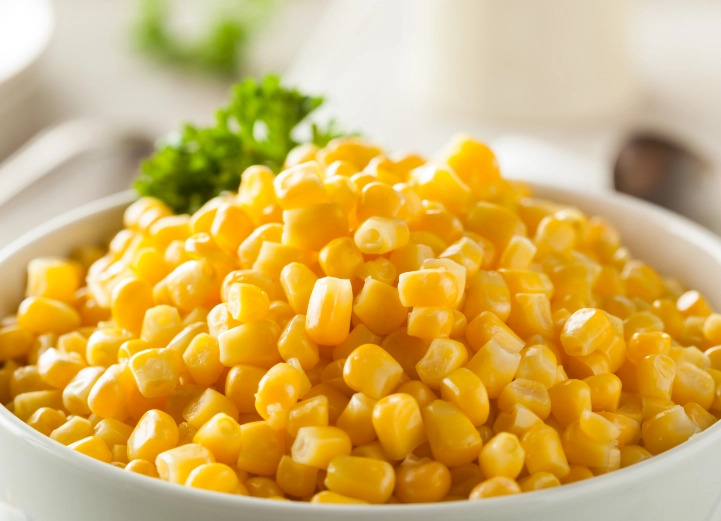

Quiénes somos
Cornfield es una página creada para mostrar la importancia del maíz en la alimentación, la cultura y la vida diaria. Nuestro objetivo es presentar este tema de una forma sencilla, ordenada y agradable para que cualquier persona pueda comprender por qué este alimento ha sido tan valioso a lo largo del tiempo.
En este sitio reunimos información básica, imágenes y contenido visual relacionado con el maíz, para que la experiencia sea más clara y entretenida. Queremos que Cornfield sea un espacio informativo, pero también cercano, donde se pueda aprender sin que todo se vea tan serio o complicado.
Además, buscamos destacar el esfuerzo que hay detrás del cultivo del maíz y el papel tan importante que tiene en muchas tradiciones y recetas que forman parte de nuestra vida cotidiana.

Misión y Visión
Misión
Nuestra misión es compartir información clara y útil sobre el maíz, resaltando su valor como alimento, su importancia cultural y su presencia en la vida diaria de muchas personas.
Visión
Nuestra visión es convertir Cornfield en una página informativa y agradable, donde los visitantes puedan aprender sobre el maíz de una manera sencilla, visual y bien organizada.
Qué Ofrecemos

En Cornfield ofrecemos un espacio pensado para aprender sobre el maíz de forma fácil y ordenada.
Información clara: textos breves y entendibles sobre su origen, uso y valor.
Contenido visual: imágenes relacionadas con el cultivo, la planta y sus diferentes formas.
Diseño agradable: una presentación sencilla que hace más cómodo recorrer la página.
Aprendizaje práctico: datos que ayudan a conocer mejor este alimento tan importante.
Nuestros valores
Tradición
Valoramos el maíz como parte de la historia y las costumbres de muchos pueblos que lo han cultivado durante generaciones.
Aprendizaje
Creemos que conocer más sobre el maíz ayuda a entender mejor su importancia en la alimentación y en la vida cotidiana.
Respeto por la naturaleza
Reconocemos el esfuerzo que implica cultivar este alimento y la necesidad de cuidar la tierra que lo hace posible.